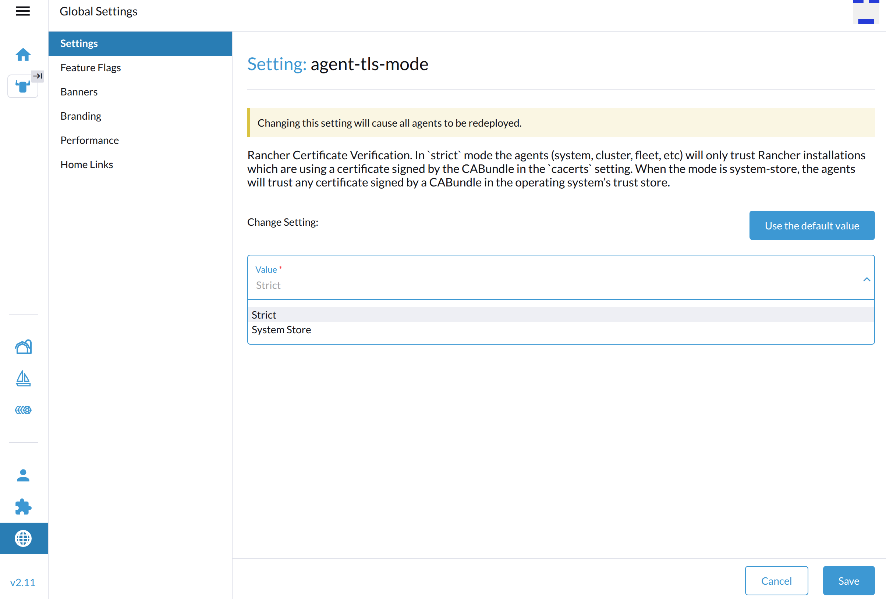

|
This is unreleased documentation for SUSE® Virtualization v1.6 (Dev). |
Rancher Issues
Guest Cluster Log Collection
You can collect guest cluster logs and configuration files. Perform the following steps on each guest cluster node:
-
Log in to the node.
-
Download the Rancher v2.x Linux log collector script and generate a log bundle using the following commands:
curl -OLs https://raw.githubusercontent.com/rancherlabs/support-tools/master/collection/rancher/v2.x/logs-collector/rancher2_logs_collector.sh sudo bash rancher2_logs_collector.sh
The output of the script indicates the location of the generated tarball.
For more information, see The Rancher v2.x Linux log collector script.
Importing of Harvester Clusters into Rancher
After the cluster-registration-url is set on Harvester, a deployment named cattle-system/cattle-cluster-agent is created for importing of the Harvester cluster into Rancher.
Import Pending Due to unable to read CA file Error
The following error messages in the cattle-cluster-agent-* pod logs indicate that the Harvester cluster cannot be imported into Rancher.
2025-02-13T17:25:22.520593546Z time="2025-02-13T17:25:22Z" level=info msg="Rancher agent version v2.10.2 is starting"
2025-02-13T17:25:22.529886868Z time="2025-02-13T17:25:22Z" level=error msg="unable to read CA file from /etc/kubernetes/ssl/certs/serverca: open /etc/kubernetes/ssl/certs/serverca: no such file or directory"
2025-02-13T17:25:22.529924542Z time="2025-02-13T17:25:22Z" level=error msg="Strict CA verification is enabled but encountered error finding root CA"The root cause is ineffective configuration of Rancher’s agent-tls-mode setting, which controls how Rancher’s agents (cluster-agent, fleet-agent, and system-agent) validate Rancher’s certificate when establishing a connection. The default value of this setting depends on the Rancher version and installation type.
| Type | Versions | Default Value |
|---|---|---|
New installation |
v2.8 |
|
New installation |
v2.9 and later |
|
Upgrade |
v2.8 to v2.9 |
|
You can configure this setting to match your requirements by performing the following steps:
-
Log in to the Rancher UI.
-
Go to Global Settings → Settings.
-
Select agent-tls-mode, and then select ⋮ → Edit Setting to access the configuration options.

-
Select one of the following values:
-
Strict: Rancher’s agents only trust certificates generated by the Certificate Authority (CA) specified in the
cacertssetting. This is the recommended default TLS setting.The Strict option enables a higher level of security by requiring Rancher to have access to the CA that generated the certificate visible to the agents. In the case of certain certificate configurations (notably, external certificates), this is not automatic, and extra configuration is required. For more information about scenarios that require extra configuration, see Choose your SSL Configuration in the Rancher documentation.
-
System Store: Rancher’s agents trust any certificate generated by a public CA specified in the operating system’s trust store. Use this setting if your setup uses an external trust authority and you don’t have ownership over the Certificate Authority.
Using the System Store setting implies that the agent trusts all external authorities found in the operating system’s trust store including those outside of the user’s control.
-
-
Click Save.
Related issues:
-
Rancher: #45628 (See this comment.)